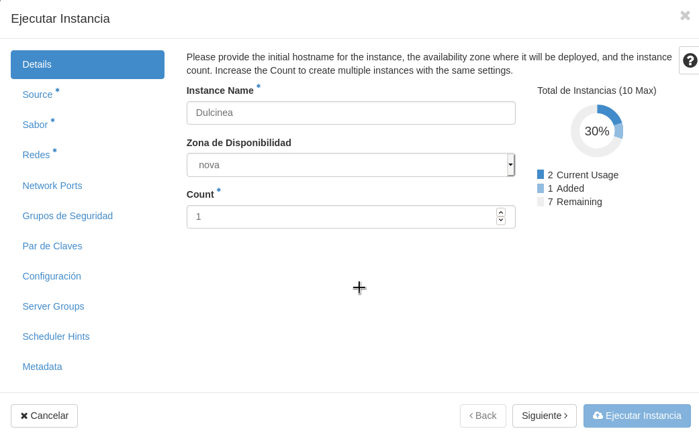
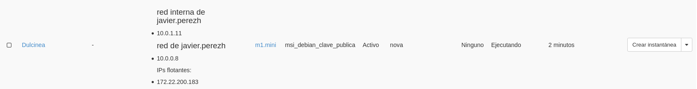

En esta tarea se va a crear el escenario de trabajo que se va a usar durante todo el curso, que va a constar inicialmente de 3 instancias con nombres relacionados con el libro "Don Quijote de la Mancha".
Pasos a realizar:
1. Creación de la red interna:
- Nombre red interna de (nombre de usuario)
- 10.0.1.0/24
Levantamos la VPN:
systemctl start openvpn.service
Creación de la red:


2. Creación de las instancias:
-
Dulcinea:
- Debian Buster sobre volumen de 10GB con sabor m1.mini
- Accesible directamente a través de la red externa y con una IP flotante
- Conectada a la red interna, de la que será la puerta de enlace
Creación de Dulcinea:
Creamos el volumen:


Instancia:




javier@debian:~$ ssh -A debian@172.22.200.174 The authenticity of host '172.22.200.174 (172.22.200.174)' can't be established. ECDSA key fingerprint is SHA256:02tcuAKlKD7EDhB9XcFYBAXsFQ+j0cuD5cTXLoWZxHE. Are you sure you want to continue connecting (yes/no)? yes Warning: Permanently added '172.22.200.174' (ECDSA) to the list of known hosts. Linux dulcinea 4.19.0-11-cloud-amd64 #1 SMP Debian 4.19.146-1 (2020-09-17) x86_64 The programs included with the Debian GNU/Linux system are free software; the exact distribution terms for each program are described in the individual files in /usr/share/doc/*/copyright. Debian GNU/Linux comes with ABSOLUTELY NO WARRANTY, to the extent permitted by applicable law.
root@dulcinea:/home/debian# passwd debian New password: Retype new password: passwd: password updated successfully root@dulcinea:/home/debian# passwd root New password: Retype new password: passwd: password updated successfully
-
Sancho:
- Ubuntu 20.04 sobre volumen de 10GB con sabor m1.mini
- Conectada a la red interna
- Accesible indirectamente a través de dulcinea
Vamos a repetir el mismo proceso que con Dulcinea.
Creamos el volumen:

Instancia:

debian@dulcinea:~$ ssh ubuntu@10.0.1.8 The authenticity of host '10.0.1.8 (10.0.1.8)' can't be established. ECDSA key fingerprint is SHA256:pI1VfiGw672VL++WhAu5C2J7VPK4SHPdD6PJWXP5l8Q. Are you sure you want to continue connecting (yes/no)? yes Warning: Permanently added '10.0.1.8' (ECDSA) to the list of known hosts. Welcome to Ubuntu 20.04.1 LTS (GNU/Linux 5.4.0-48-generic x86_64) * Documentation: https://help.ubuntu.com * Management: https://landscape.canonical.com * Support: https://ubuntu.com/advantage System information as of Thu Nov 12 11:21:33 UTC 2020 System load: 0.68 Processes: 101 Usage of /: 12.8% of 9.52GB Users logged in: 0 Memory usage: 36% IPv4 address for ens3: 10.0.1.8 Swap usage: 0% 1 update can be installed immediately. 0 of these updates are security updates. To see these additional updates run: apt list --upgradable The list of available updates is more than a week old. To check for new updates run: sudo apt update The programs included with the Ubuntu system are free software; the exact distribution terms for each program are described in the individual files in /usr/share/doc/*/copyright. Ubuntu comes with ABSOLUTELY NO WARRANTY, to the extent permitted by applicable law. To run a command as administrator (user "root"), use "sudo". See "man sudo_root" for details. ubuntu@sancho:~$
root@sancho:/home/ubuntu# passwd ubuntu New password: Retype new password: passwd: password updated successfully root@sancho:/home/ubuntu# passwd root New password: Retype new password: passwd: password updated successfully
-
Quijote:
- CentOS 7 sobre volumen de 10GB con sabor m1.mini
- Conectada a la red interna
- Accesible indirectamente a través de dulcinea
Y por último repetimos el proceso para crear a Quijote.
Creamos el volumen:

Instancia:

debian@dulcinea:~$ ssh centos@10.0.1.4 The authenticity of host '10.0.1.4 (10.0.1.4)' can't be established. ECDSA key fingerprint is SHA256:M40LvGOKlrafavtqmYPTSfp5QATqqRYGitJjqhGIzBI. Are you sure you want to continue connecting (yes/no)? yes Warning: Permanently added '10.0.1.4' (ECDSA) to the list of known hosts. [centos@quijote ~]$
[root@quijote centos]# passwd centos Changing password for user centos. New password: Retype new password: passwd: all authentication tokens updated successfully. [root@quijote centos]# passwd root Changing password for user root. New password: Retype new password: passwd: all authentication tokens updated successfully.
3. Configuración de NAT en Dulcinea (Es necesario deshabilitar la seguridad en todos los puertos de Dulcinea) Ver este vídeo.
Para hacer NAT en Dulcinea hacia Quijote y Sancho, tenemos que modificar el grupo de seguridad de Dulcinea y deshabilitar la seguridad de todos sus puertos, es decir, quitarle las reglas de cortafuegos, para luego añadirle nuestra propia regla de iptables.
Para ello tenemos que configurar OpenStack para administrar nuestro proyecto desde la línea de comandos, que es desde donde vamos a realizar este proceso.
Vamos a crear un entorno virtual y trabajaremos desde aquí. Es necesario instalar estos paquetes:
apt install python-virtualenv python3-pip -y
Creamos nuestro entorno virtual:
javier@debian:~/openstack$ python3 -m venv openstack javier@debian:~/openstack$ source openstack/bin/activate (openstack) javier@debian:~/openstack$
Una vez estemos en nuestro entorno virtual, vamos a realizar la instalación del paquete python-openstackclient, que es el que necesitamos para administrar nuestra cuenta de OpenStack. Antes de realizar la instalación recomiendo actualizar la herramienta pip.
(openstack) javier@debian:~/openstack$ pip install --upgrade pip (openstack) javier@debian:~/openstack$ pip install python-openstackclient
Una vez tenemos instalado este paquete, nos quedaría vincular nuestra cuenta. Para llevar a cabo el proceso de vinculación, debemos dirigirnos desde el navegador hacia el gestor de nuestro proyecto, e irnos al apartado de Acceso y seguridad y Acceso a la API. Obtendremos esta salida:

Podemos observar que nos muestra unos ficheros para descargar, debemos hacer click en el llamado Descargar fichero RC de OpenStack v3. Una vez descargado, lo movemos al directorio donde hemos creado el entorno virtual.
(openstack) javier@debian:~/openstack$ ls openstack 'Proyecto de javier.perezh-openrc.sh'
En mi caso, el archivo descargado recibe el nombre Proyecto de javier.perezh-openrc.sh, y en él, vamos a introducir la siguiente línea, donde especificaremos la ruta donde se encuentra el certificado del Gonzalo Nazareno, que es la entidad que maneja los proyectos de OpenStack, entre los cuáles se encuentra el mío.
export OS_CACERT=/etc/ssl/certs/gonzalonazareno.crt
En este punto, ya podríamos iniciar el proceso de vinculación desde la terminal. Ejecutamos el siguiente comando para verificar nuestras credenciales e iniciar sesión.
(openstack) javier@debian:~/openstack$ source 'Proyecto de javier.perezh-openrc.sh' Please enter your OpenStack Password for project Proyecto de javier.perezh as user javier.perezh:
Si hemos introducido correctamente la contraseña, ya podríamos administrar nuestro proyecto desde la terminal. Por ejemplo, podemos listar nuestras instancias:
(openstack) javier@debian:~/openstack$ openstack server list +--------------------------------------+----------------------+--------+---------------------------------------------------------------------------------------+--------------------------+---------+ | ID | Name | Status | Networks | Image | Flavor | +--------------------------------------+----------------------+--------+---------------------------------------------------------------------------------------+--------------------------+---------+ | c7f6c834-1eeb-402a-9ed2-5ce1cb1246a2 | Quijote | ACTIVE | red interna de javier.perezh=10.0.1.4 | N/A (booted from volume) | m1.mini | | bff8a1d9-01d8-4835-9513-fb49290f11ed | Sancho | ACTIVE | red interna de javier.perezh=10.0.1.8 | N/A (booted from volume) | m1.mini | | 1e501c2a-69dd-40ea-9d89-8fb97a355b27 | Dulcinea | ACTIVE | red de javier.perezh=10.0.0.10, 172.22.200.174; red interna de javier.perezh=10.0.1.5 | N/A (booted from volume) | m1.mini | | 1228132f-73ae-4ccf-9216-bf17fab31d12 | Deb10-ServidorNginx2 | ACTIVE | red de javier.perezh=10.0.0.9 | N/A (booted from volume) | m1.mini | | 70264938-6486-4db0-af71-89d0037f3d54 | Deb10-ServidorNginx | ACTIVE | red de javier.perezh=10.0.0.3, 172.22.200.116 | N/A (booted from volume) | m1.mini | +--------------------------------------+----------------------+--------+---------------------------------------------------------------------------------------+--------------------------+---------+
Vemos como nos muestra las instancias creadas, entre las cuáles se encuentran las tres que formarán el escenario, Quijote, Sancho y Dulcinea.
Antes estuvimos realizando las comprobaciones de que efectivamente nos podíamos conectar a estas máquinas, esto se debe a que tiene un grupo de seguridad asociado, llamado default, que por defecto se asocia a las instancias que lanzamos, y que permite esta opción, entre otras.
Lo que vamos a hacer es eliminar este grupo de seguridad a Dulcinea, por tanto, ya no podríamos conectarnos a ella, pero luego vamos a deshabilitar la seguridad de puertos, y ya de nuevo, sería accesible mediante SSH.
Primeramente. vamos a ver los detalles de esta instancia:
(openstack) javier@debian:~/openstack$ openstack server show Dulcinea +-----------------------------+---------------------------------------------------------------------------------------+ | Field | Value | +-----------------------------+---------------------------------------------------------------------------------------+ | OS-DCF:diskConfig | AUTO | | OS-EXT-AZ:availability_zone | nova | | OS-EXT-STS:power_state | Running | | OS-EXT-STS:task_state | None | | OS-EXT-STS:vm_state | active | | OS-SRV-USG:launched_at | 2020-11-12T11:02:24.000000 | | OS-SRV-USG:terminated_at | None | | accessIPv4 | | | accessIPv6 | | | addresses | red de javier.perezh=10.0.0.10, 172.22.200.174; red interna de javier.perezh=10.0.1.5 | | config_drive | | | created | 2020-11-12T11:02:01Z | | flavor | m1.mini (12) | | hostId | 1cd650c7bff842c92682e8bc3d0d184f4ddcc2e41fc41ae8487eeb6a | | id | 1e501c2a-69dd-40ea-9d89-8fb97a355b27 | | image | N/A (booted from volume) | | key_name | msi_debian_clave_publica | | name | Dulcinea | | progress | 0 | | project_id | 678e0304a62c445ba78d3b825cb4f1ab | | properties | | | security_groups | name='default' | | | name='default' | | status | ACTIVE | | updated | 2020-11-12T11:02:24Z | | user_id | fc6228f3de9b2e4abfc00a526192e37c323cde31412ffd98d1bf7c584915f35a | | volumes_attached | id='9bd08310-3e86-4146-b70f-68950c86749f' | +-----------------------------+---------------------------------------------------------------------------------------+
Vemos como efectivamente posee el grupo de seguridad default comentando anteriormente.
Procedemos a eliminar este grupo de seguridad:
4.Definición de contraseña en todas las instancias (para poder modificarla desde consola en caso necesario)
Dulcinea:
root@dulcinea:/home/debian# passwd debian New password: Retype new password: passwd: password updated successfully root@dulcinea:/home/debian# passwd root New password: Retype new password: passwd: password updated successfully
Sancho:
root@sancho:/home/ubuntu# passwd ubuntu New password: Retype new password: passwd: password updated successfully root@sancho:/home/ubuntu# passwd root New password: Retype new password: passwd: password updated successfully
Quijote:
[root@quijote centos]# passwd centos Changing password for user centos. New password: Retype new password: passwd: all authentication tokens updated successfully. [root@quijote centos]# passwd root Changing password for user root. New password: Retype new password: passwd: all authentication tokens updated successfully.
5. Modificación de las instancias sancho y quijote para que usen direccionamiento estático y dulcinea como puerta de enlace
root@dulcinea:~# nano /etc/sysctl.conf root@dulcinea:~# sysctl -p /etc/sysctl.conf net.ipv4.ip_forward = 1 root@dulcinea:~# iptables -t nat -A POSTROUTING -s 10.0.1.0/24 -o eth1 -j MASQUERADE
6. Modificación de la subred de la red interna, deshabilitando el servidor DHCP
7. Utilización de ssh-agent para acceder a las instancias
8. Creación del usuario profesor en todas las instancias. Usuario que puede utilizar sudo sin contraseña
9. Copia de las claves públicas de todos los profesores en las instancias para que puedan acceder con el usuario profesor
10. Realiza una actualización completa de todos los servidores
11. Configura el servidor con el nombre de dominio
12. Hasta que no esté configurado el servidor DNS, incluye resolución estática en las tres instancias tanto usando nombre completo como hostname
13. Asegúrate que el servidor tiene sincronizado su reloj utilizando un servidor NTP externo